Zaam
Taking a brand-new identity off the deck and making it work as a product, website, app, and every touchpoint in between.
Owning your tech is overrated
Zaam is a subscription service in the UAE. Instead of buying the latest phone, laptop or pair of headphones, you subscribe to it monthly, and when you want something newer, you swap. No two-year commitment to a device that ages badly, no drawer full of dead electronics.
The proposition is genuinely good. The problem was that nothing about the product looked or felt like it. Zaam read like every other electronics store, which is a strange thing to be when your whole argument is that you shouldn't shop like you're at an electronics store.
The client rebranded: hot pink and juicy yellow, condensed display type, a voice that actually talks like a person. Our job, two designers and a marketing manager, was to take that identity off the brand deck and make it work as a product. I led the product surfaces: the website, the app, and the account experience underneath both.
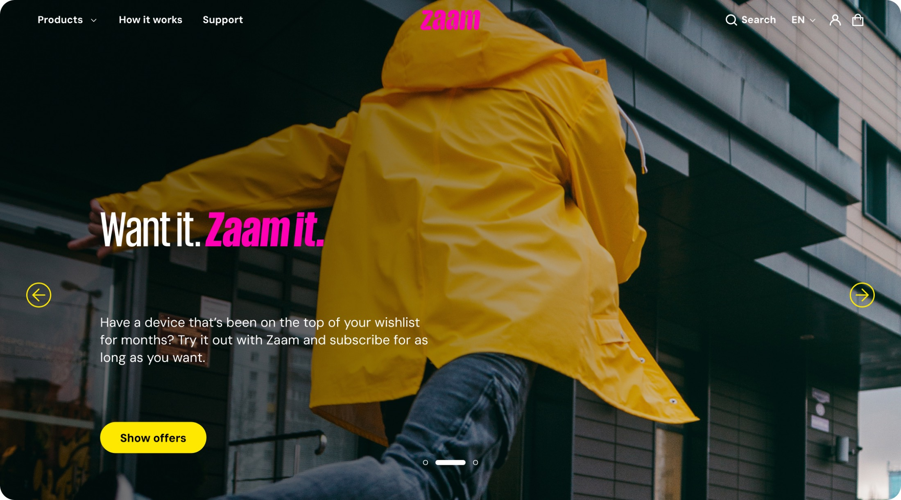
Funky is easy to draw and hard to use
The new identity was strong, but almost every element of it fought usability somewhere. Hot pink on juicy yellow fails contrast outright. The condensed display face is gorgeous at 72px and illegible at 14. And a voice that jokes with you is charming on a landing page and infuriating when you are trying to cancel a subscription and get your money back.
None of that is a reason to dilute the brand. It's a reason to be deliberate about where it's allowed to speak.
Spend the brand where it earns attention. Get out of the way everywhere else.
In practice that meant the display face, the pink and the yellow own heroes, section breaks, empty states and moments of good news. Anywhere a person is reading their own money, billing, subscription status, cancellation, delivery, the page goes quiet: neutral surfaces, body type at a readable size, and copy that answers the question instead of performing.
Nobody is confused about how to buy a phone
We opened with market research and a competitor analysis across subscription services and conventional electronics retail. The interesting gap showed up fast: subscription businesses borrow the language and layout of retail, but the hard parts sit somewhere completely different.
Buying is a solved problem. People know how to browse a grid, filter by brand and check out. What they don't know is what happens after, when the screen cracks, when a newer model lands, when they've grown attached to the device and want to keep it, when they want out early and are worried it'll cost them.
That reframed the work. The shop front had to look like the brand. The account area had to carry the business.
Where competitors spend their design
Product discovery, imagery, checkout. Polished front doors, thin account areas.
Where the anxiety actually lives
Damage, upgrades, returns, early cancellation, and what any of it costs.
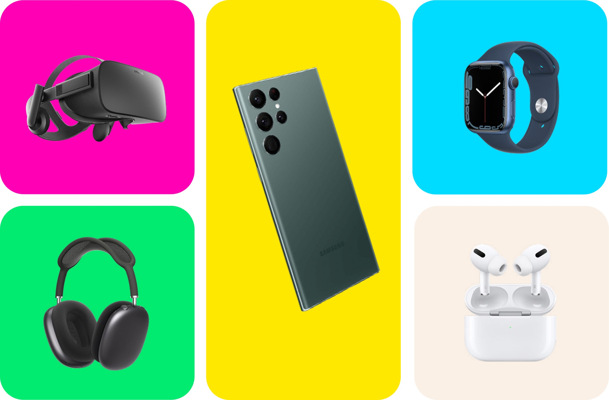
Two flows, before a single screen
Because the value was concentrated in the messy post-purchase paths, we mapped them before designing anything. Two maps, doing two different jobs: the website journey traces the transactional depth end to end, and the app map settles information architecture and discovery.
Website user journey
Every subscription action ends the same way, a request record and an email, but the routes there differ in how much they cost the customer and how much they need to be reassured. Laying them side by side made the shared spine obvious, and that spine became a single reusable pattern: act → give a reason → see the cost → confirm → get it in writing.
Entry
Start Sign in Reset password Reset email sentMy account
Account details My addresses My transactions LogoutMy subscriptions
View subscription Update credit card Cancel orderActions
Keep it forever Extend subscription Upgrade device Damage report Return a device Cancel subscriptionReason & cost
Prompt reason Time & pickup location Show amount due Proceed to payment?Resolution
Request created Amount deducted / refunded Confirmation email sent Request detailsSix stages, wider than the column, scroll sideways to follow a request through to resolution.
Mobile app architecture
The app had a different problem: an existing structure that had grown by accretion. We rebuilt the navigation around three things a person actually opens the app to do, browse, manage what they already subscribe to, and get help, and moved everything else behind the side menu.
The Zaamverse sits deliberately outside that hierarchy. It's a persona quiz for people who want a new device but have no idea which one, and it's the one place the brand is allowed to be loud in the middle of a task.
-
Home
- Search
- My shopping cart
- Best deals
- New tech
- New arrivals
- Straight from the source
- Enter the Zaamverse
-
My account
- Active subscriptions
- Subscription history
- My wallet
- My address
- Saved payment options
- Account settings
-
Products
- All
- Phones
- Audio
- Computers & tablets
- Wearables
- TVs
-
Zaamverse
- Quiz entry
- Pick your persona
- Student · Content creator · Entrepreneur · Tech guru
- Questions
- Recommended devices
-
Side menu
- How it works
- Who we are
- Support
- Settings
- Invite a friend
- Terms of use
- Logout
A shop front that sells the idea, not just the devices
Zaam isn't selling an iPhone, a hundred other places sell an iPhone. It's selling not having to decide once and live with it. The home page leads with that, and the product pages carry the part people actually need to weigh up: the monthly rate, the subscription length, and what happens at the end of it.
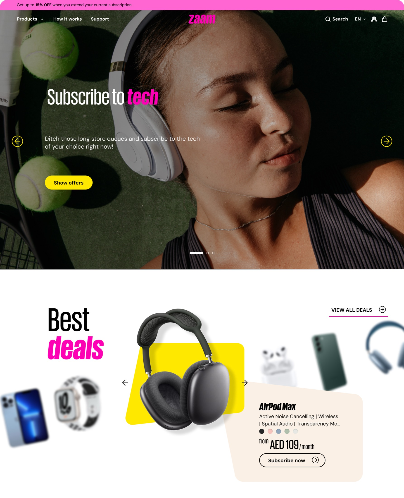
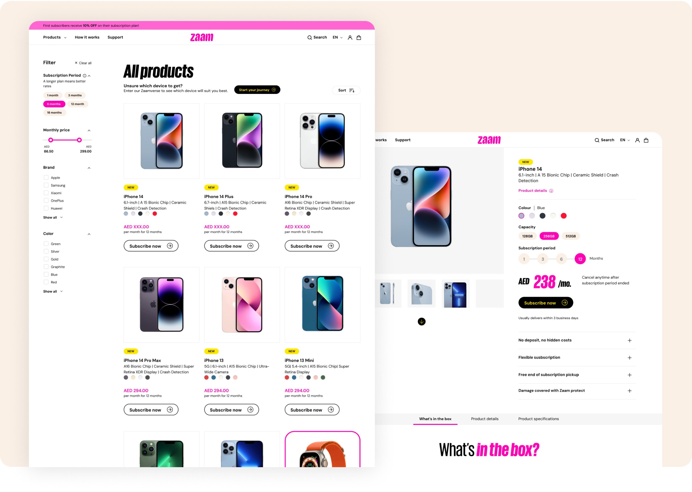
The account area is the product
This is where the design work concentrated. A subscriber's page has to answer three questions at a glance, what am I paying, how long is left, and what can I do about it, before it does anything else. Every subscription card leads with the device, the monthly rate and a progress bar, then puts the actions right underneath instead of burying them in a menu.
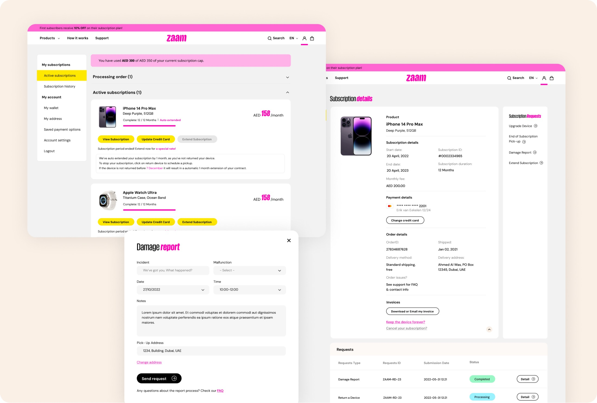
Damage, returns, upgrades and cancellations all resolve into request records, so we designed one status object and reused it everywhere. A person tracking a repair and a person tracking a return are looking at the same component in a different state, which is cheaper to build and much less to learn.
Zaamverse, and knowing when to be loud
The persona quiz is the counterweight to all that restraint. Someone who knows they want something but not what gets a short, playful path, pick a persona, answer a few questions, see devices chosen for how they'd actually use them, with the reasoning attached. It's the most brand-forward thing in the product, and it earns it by doing real work.
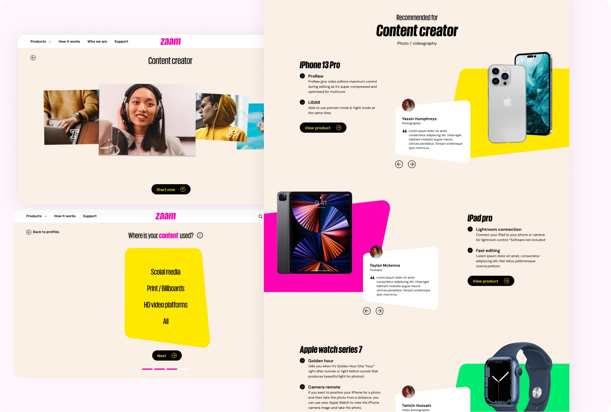
Same brand, different attention span
The app isn't a smaller website. People open it standing up, one-handed, usually to check one thing. So the account view leads with what's live right now, actions collapse to icon buttons within reach of a thumb, and the subscription cap, the number people most want to know, sits at the top as a status banner rather than a line item.
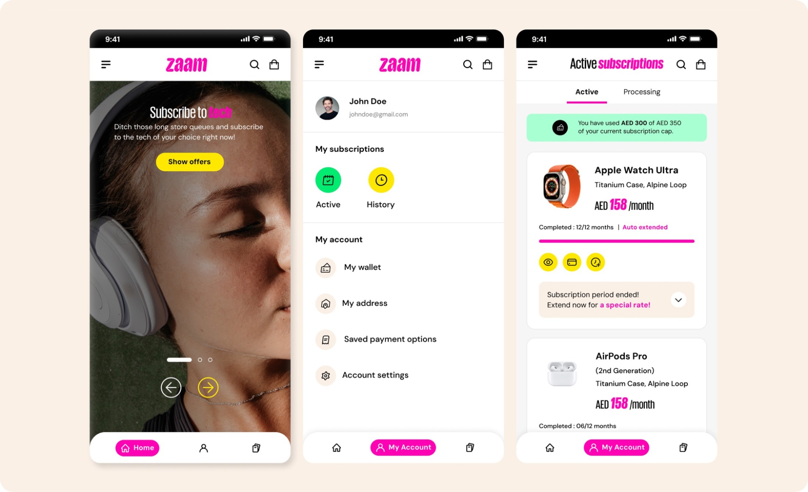
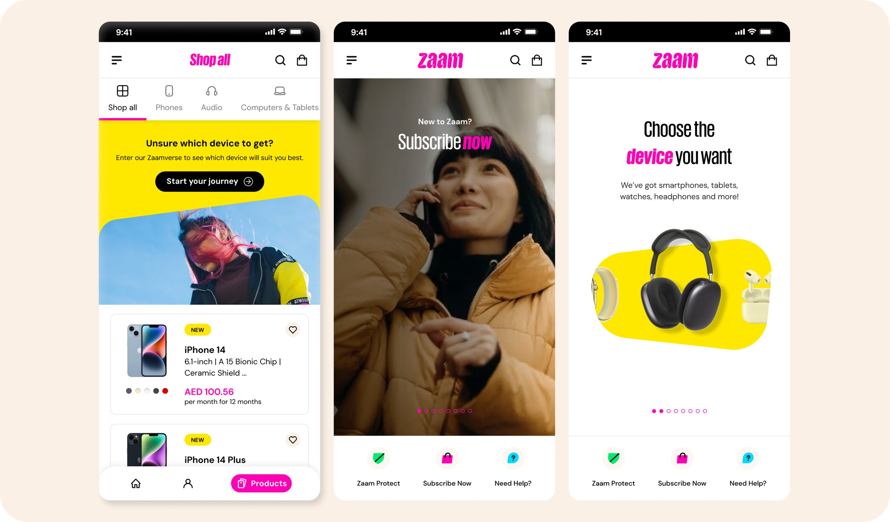
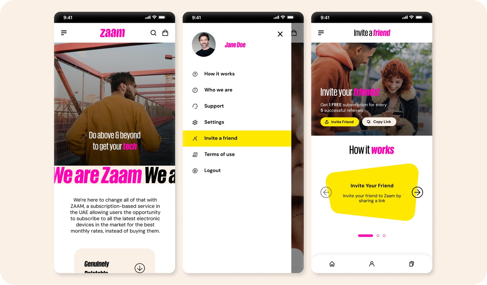
Holding up at every width
Every template was drawn at desktop, tablet and mobile before hand-off, including the states that usually get skipped: empty carts, expired subscriptions, in-flight requests, and the long-copy screens where the condensed display face has to give way to body type.
Making the brand safe to reuse
A brand this loud falls apart the moment three people apply it by eye, and there were exactly three of us. So the palette ships with proportions attached, roughly 50% neutral, 40% brand, 10% accent, which is what keeps a page energetic instead of exhausting. Semantic colours are pulled out separately so nobody reaches for hot pink to signal an error.
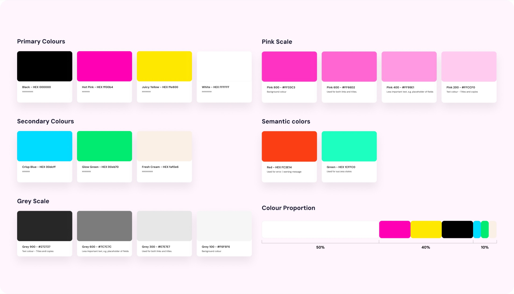
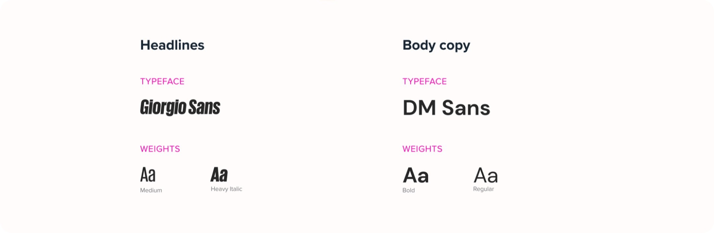
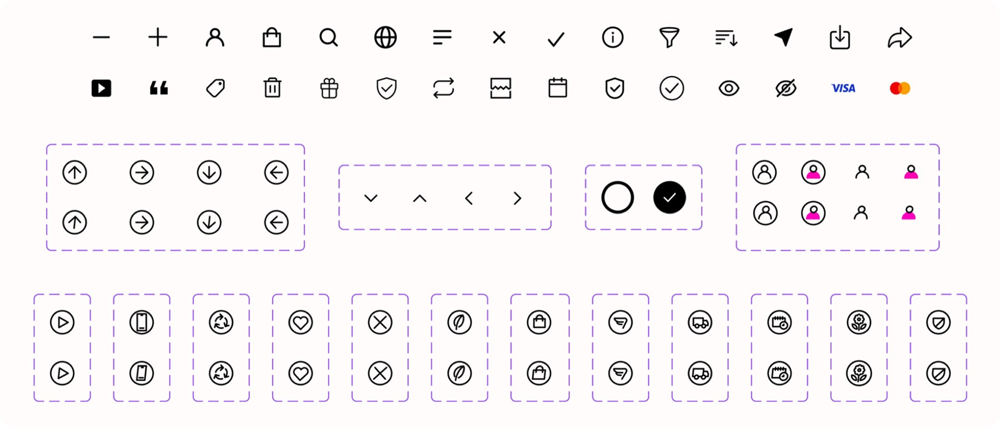
The emails people actually open
Subscription businesses live in the inbox, welcomes, confirmations, delivery notices, upgrade receipts. Working with our marketing manager, we built a responsive template set that keeps the brand's voice in the headline and gets strictly practical below it: what happened, what it cost, what you need to do next, one clear action.
The detail we fought hardest for is the small print. Emails are where a subscription cap or a device-backup warning has to land, and those get their own bordered blocks rather than being buried in a paragraph nobody reads.
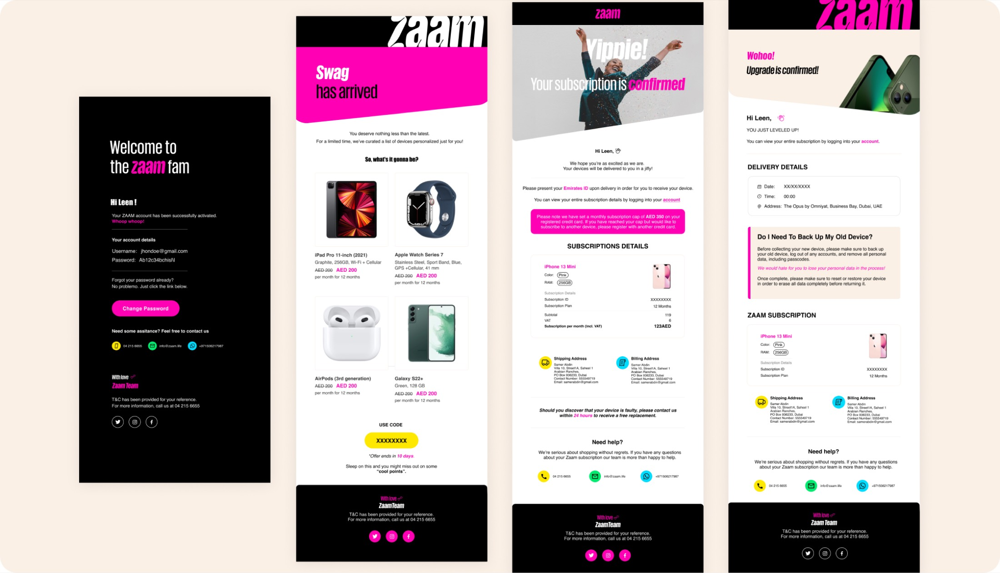
The brand leaves the screen
Zaam delivers. That means the brand shows up at someone's door on a scooter, in a box, carried by a person in a uniform, and for a lot of customers that's the first time it exists as something real rather than a website.
We extended the identity across delivery vehicles, scooter boxes, helmets, driver uniforms, hoodies, shopping bags and delivery packaging. The vehicle wraps and helmets are built for recognition at distance and speed, so they lean on the pink-and-black split and a short line of copy. The packaging works at arm's length instead, which is where the wordplay earns its place, Want it. Zaam it. on a bag you keep.
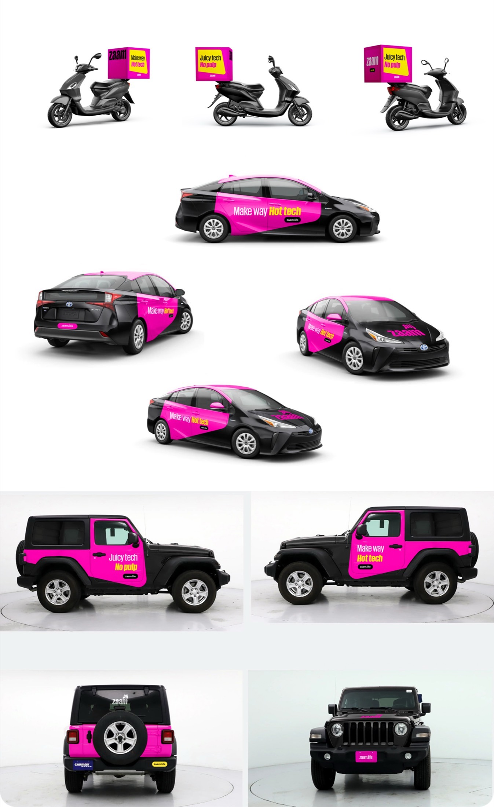
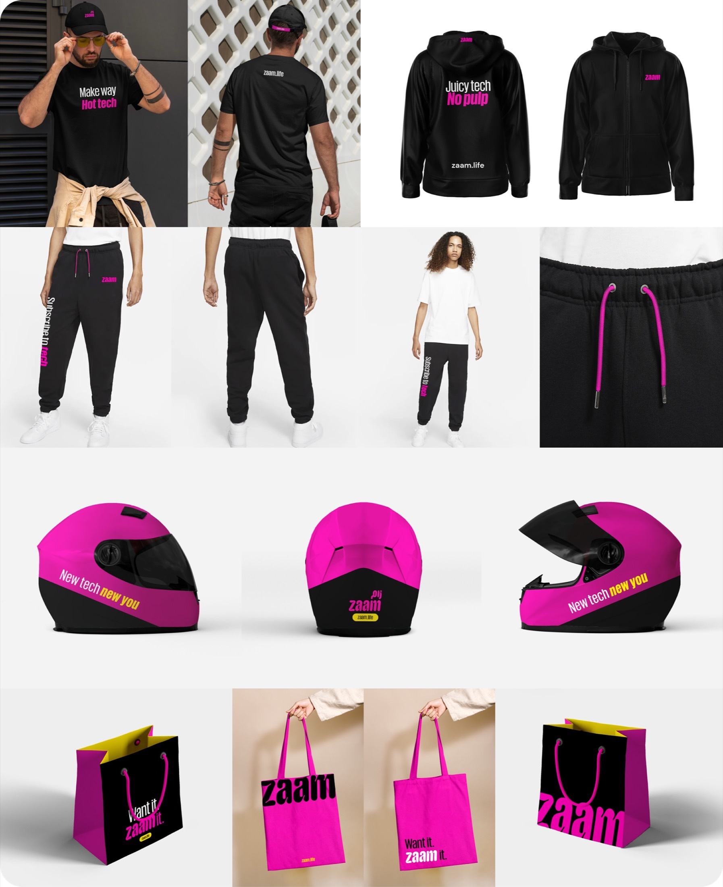
What shipped
A brand that survived contact with a product
Every element of the new identity found a place to live where it helps rather than shouts, and a rule for where it stays quiet.
An account area that carries the weight
Six subscription actions collapsed into one predictable pattern: act, give a reason, see the cost, confirm, get it in writing.
One system, many surfaces
Web, iOS, Android, email and print all draw from the same palette, type scale, icon set and spacing rules.
Handoff without guesswork
Around twenty templates specified at three breakpoints, including the empty, error and in-flight states.
What I took from it
The lesson that stuck: a bold brand isn't a constraint on usability, but treating it as decoration is. The identity got better the moment we stopped asking where we could apply it and started asking what job it was doing on each screen.
If we picked this up again, I'd push to test the cancellation flow with real users. It's the most emotionally loaded path in the product and the one place we were designing from reasoning rather than evidence.